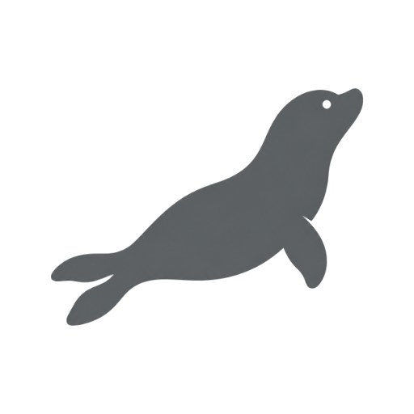
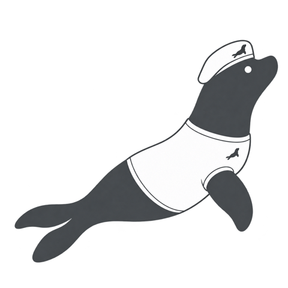
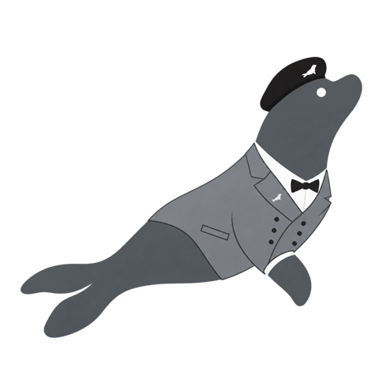

让真正有价值的前沿技术，更早被发现、被验证、被投资。

SEAL Growth · Zhangjiang AI Island, Shanghai
我们只做一件事
遴选极少数具备显著潜力的前沿科技项目，向决策明确、条款合理、尊重创始团队的投资机构推介。事前披露利益关系，促进前沿技术的真实价值更早获得认知。
- 不提供资金No capital deployment
- 现阶段不收费No fees at this stage
- 不依赖财政资金No reliance on government funding
01
海豹基因
The seal in us海豹上岸很慢，入水很快。我们把慢留给判断，把快留给行动。
-

潜得深Dive deep
判断做到原理与工程层面：它在物理和数学上能走多远，成本、周期和可靠性能不能算清。
-
两栖Amphibious
在技术与资本两个世界之间往返：把技术讲给资本听，把资本的规则讲给技术听。
-
安静Quiet
不造声量。价值由真实决定，而不是由声量决定。
-
小队A small pod
五类人，精干、紧密协同，把一件事做完。
02
我们做什么
What we do用技术尽职调查和真实证据，降低早期科技投资的不确定性。四步，不多不少。
- 01
遴选
Screen赛道、团队与技术路线。
- 02
技术尽职调查
Diligence成熟度、壁垒与工程可行性。
- 03
实证
Verify客户、付费与关键数据。
- 04
匹配
Match按阶段与方向匹配，促成直接交流。
一次评审怎么做
- 线上接触零散信息或一份简易 BP 即可。我们先给一页会前摘要和三个问题。
- 30 分钟线上会议你答三到五个问题，我们当场在速查表上点选、备注。
- 会后校验联网核对行业、可比公司、政策与技术路线，每条标来源与置信度。
- 创始人版报告一页诊断、一页行动清单、可选一页索证，三页以内，材料齐、排期顺时一周内闭环。档位颜色照给，"弱点"对创始人称"待补强"。
不需要商业计划书，先谈问题本身。评审用的全部规则见开源方法。
03
我们去哪儿
Where we are going愿景、使命、原则。三层，自上而下。
Vision · 愿景
推动中国 AGI 产业发展
Mission · 使命
降低早期科技投资的不确定性
用技术尽职调查和真实证据，而不是用叙事。
Principles · 原则
- 证据优先Evidence first
- 风险前置Risks upfront
- 独立判断Independent view
- 利益透明Full disclosure
乌托邦或许不存在，
但方向可以朝它走。Utopia may not exist, but we can still move toward it.
04
团队文化
The pod五类人，共同回答一个问题：这项技术是否真实，是否重要，能否在不损害创造者的前提下，获得资本并走向世界。

哲学
Philosophy追问根本这项技术究竟解决什么，价值从何而来，边界在哪里。没有这一层，判断容易被叙事和热度带走。

科学
Science判断原理它在物理与数学上能走多远，决定了上限。

技术
Technology判断实现原理成立不等于做得出来，成本、周期与可靠性要算清。
财务
Finance量化风险投融资的每一个假设，都要经得起数字的检验。

法律
Legal守住边界数据合规、跨境经营与全球政策，事前讲清，事后少留隐患。
我们相信，能把事情做成的，往往是理想主义者。他们心无旁骛，把全部注意力放在问题本身。
创造需要安静，判断需要距离。外部力量一旦过早、过强地介入，专注就会被稀释，方向就会失真。我们不主张强干预，主张克制：资本在恰当的时点、以恰当的方式进入；其余的时间，把创造留给创造者。
我们追求的，是 AGI 的一种理想形态：技术回到技术本身，价值由真实决定，而不是由声量决定。
05
判断
Judgment五条红线，坚决不涉及；五条看好，最愿意投入时间。
五条红线，不涉及Five red lines
- ×通用模型就能做得更好的一个通用大模型加一位工程师若能做得更好，项目就没有存在的理由。
- ×流量与信息的中转站流量分发、信息聚合、渠道中介：没有理念、没有壁垒、没有哲学。
- ×只有叙事、没有证据估值靠规划收入，卖点靠榜单名次，拒绝提供脱敏的合同、回款或测试记录。
- ×依赖补贴与申报以财政补贴、政策申报为主要收入或主要叙事。
- ×创始人只为套现、没有信仰赚一笔就走的人，容易短视，容易动摇。
五条看好，愿意投入Five convictions
- ○软硬结合，AI 决定效果AI 决定一台设备或一个模块的性能与成本，硬件用成熟件或外协。
- ○解决十年后更重要的问题长期价值大于当下热度，愿意为此承受更长的周期。
- ○有壁垒，也有理念壁垒来自物理、数据或工艺，不是先发几个月；理念决定它在压力下不变形。
- ○创始人有技术根基，也有全面判断懂技术，并对财务、法务、市场、管理与沟通有基本判断；经历过完整创业周期更好。
- ○创始人有信仰和大局观为解决问题而来，不为套现而来；看得到十年的走向，也扛得住一个季度的坏消息。
06
方法全部公开
Everything we use is open我们不收费，不以盈利为目的。评审用的六维、四档、评分锚点、流程、提示词和打分表代码全部开源，任何人都可以用自己的模型跑同一套方法。唯一不公开的，是项目方交给我们的材料。
Method · V3评审方法全文→
六维、四档、同阶段比较、关卡、关键前提、评分锚点全表与报告结构。
Tool · bring your own key自带密钥评审工具→填速查表，用你自己的模型（DeepSeek、通义千问、Kimi、Claude 等）跑一次，或零接口：复制提示词到任意对话模型。密钥只留在你的浏览器。
Files提示词、Schema 与数据→提示词 V1、JSON Schema、锚点 JSON、合成样例，可直接下载。
Licenses许可
文档 CC BY-SA 4.0，代码 Apache-2.0。代码仓库：github.com/Openclaw-D/sealgrowth。
开源的是方法与工具，不是对任何公司的结论。网站不设统计、不收集访客数据；自带密钥工具在你的浏览器里直接调用你选择的模型服务商：密钥只存在浏览器内存，输入只发给该服务商，本站没有服务器、不接收任何内容，页面代码开源可查。所有内容不构成投资建议。
07
如果你认同这些
Contact我们欢迎线下交流。不需要商业计划书，先谈问题本身。
Founders · 创始人
如果你的技术有证据
愿意被追问根本问题，愿意把成本、周期与可靠性算清，我们愿意花时间。
Investors · 投资机构
如果你希望更早看到经过技术尽职调查的前沿项目
并以明确的决策、合理的条款与创始团队直接交流，我们愿意引荐。
邓伟东
Weidong Deng · Growth Director
增长总监 · 海豹增长 SEAL Growth
- 邮箱
- A13007609250@gmail.com
- 微信
- _AGENTS_
- 地址
- 张江人工智能岛 · 上海市浦东新区川和路55号
Zhangjiang AI Island · 55 Chuanhe Road, Pudong, Shanghai